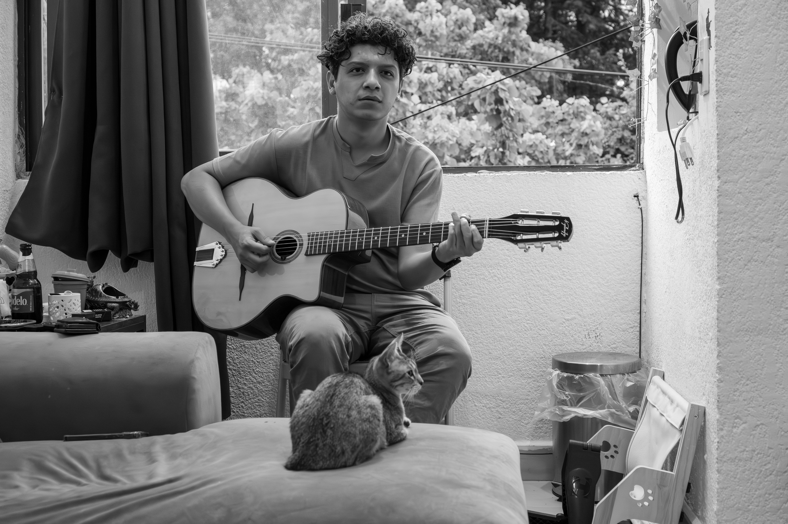
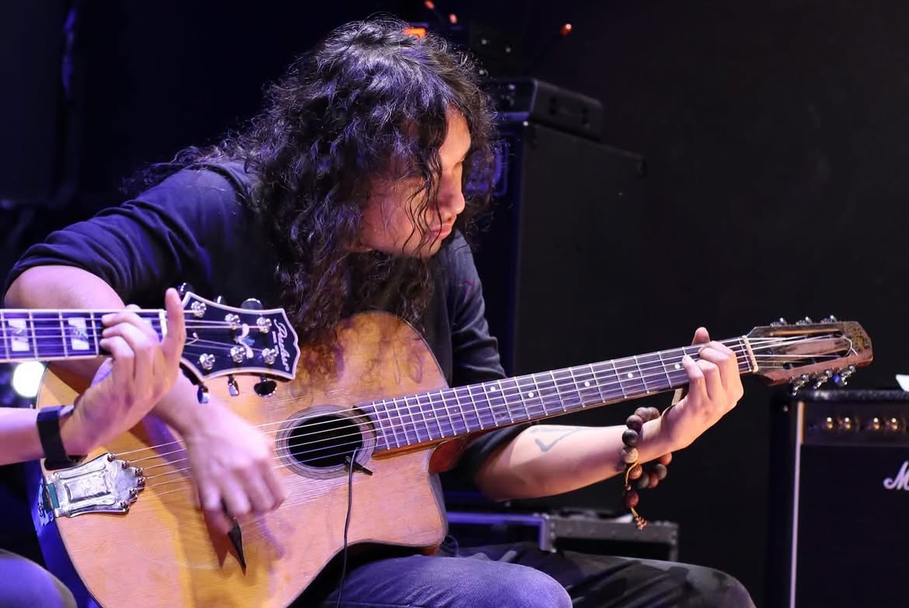

El primer estilo de jazz nacido fuera de EE. UU., adaptado a la tradición de cuerdas.
🎵 Escucha un demo en vivo:
Surgido en Francia en los años 30 con Django Reinhardt y Stéphane Grappelli, el Jazz Manouche fusiona el swing americano con la tradición gitana europea. Les Enfants Terribles, liderado por Saúl Martínez, explora y difunde este género rindiendo homenaje a sus raíces e incorporando nuevas influencias contemporáneas.

Guitarra / Gestión
Egresado del Conservatorio de Música del Estado de México. Especialista en improvisación, arreglos y docente de jazz tradicional.

Guitarra
Guitarrista originario de la CDMX, alimentado por el jazz, blues y la música popular en vivo.
Contrabajo
Bajista autodidacta de Xochimilco. Ha colaborado en proyectos de salsa, flamenco, balkan y con la Orquesta Filarmónica Mexiquense.
Descarga o consulta en línea el Dossier / Press Kit oficial de la agrupación que incluye la semblanza completa, trayectoria y el Rider Técnico (Input List, Requerimientos de Escenario e Iluminación).
📄 Abrir / Descargar Press Kit (PDF)Escucha nuestras interpretaciones, fechas de próximos conciertos y contenido exclusivo:
Contrataciones, Fechas y Talleres:
📍 Saúl Martínez: (55) 7324 4982
📍 David Rojas: (33) 4463 8249
📍 André Izquierdo: (55) 2539 5351